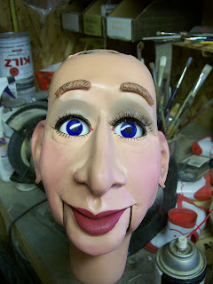
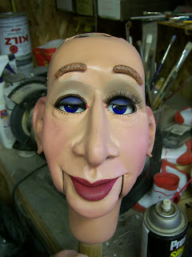
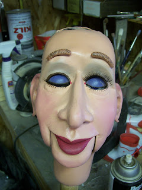

Dilemma
2/26/2010
{kind=link}

There's good reason why you do not often see eyelashes on figures with shell winkers. The purpose of this post is to give the owner an idea of how this figure looks with lashes.
I've used the same size eyelash on each eye, but they are mounted in two different ways. In this top photo, the figure's left eye looks the best (my opinion) with the eyes open. That's because I mounted the lash on the eyeball opening itself. But it is stationary.
The figure's right eye has the eyelash glued to the shell of the winker so the lash can move with the "eyelid" as it opens and closes.
The problem we run into when mounting the eyelash to the actual winker shell is this - the eyeball and shell are recessed into the head. So the eyelash becomes recessed as well and less visible. Also, the width of the eyelash is restricted because it has to fit within the eye socket opening.
The performance appearance and effectiveness needs to be considered as well, because it is not natural for the eyelash to remain stationary as the eye "blinks". (See photos below). While it is the owners desire to have oversize exaggerated eyelashes on her beauty, there's really no way to do so and have them mounted upon the winker shell of this figure.
{kind=link}


{kind=link}
Figure's left eye has the same size eyelash glued to the top edge of the eye socket.
Personal to owner: Which method do you prefer I use?